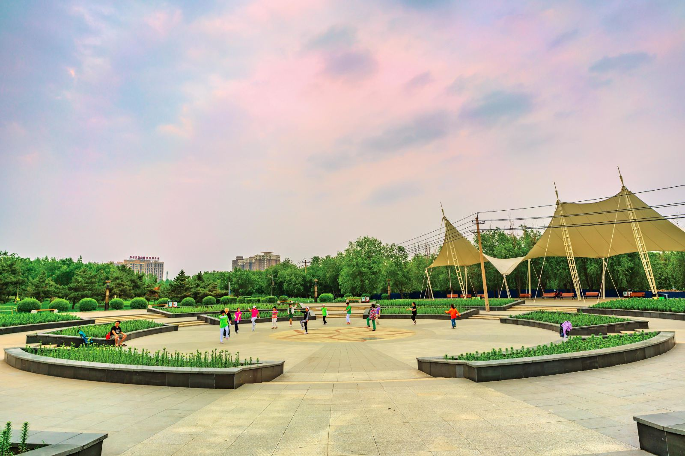
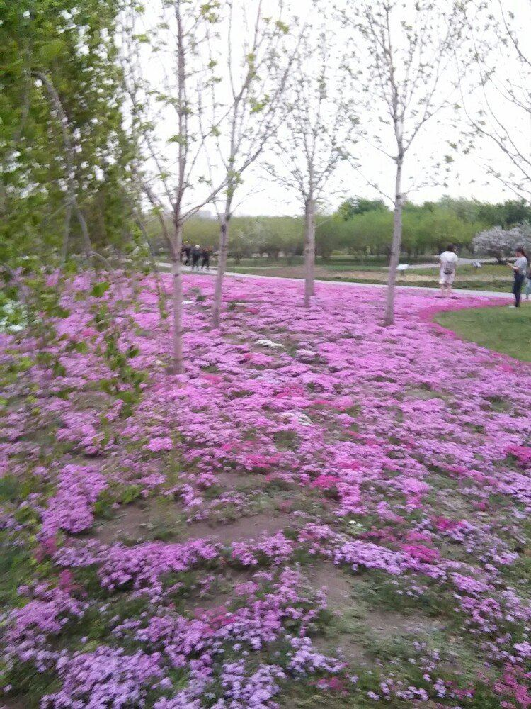
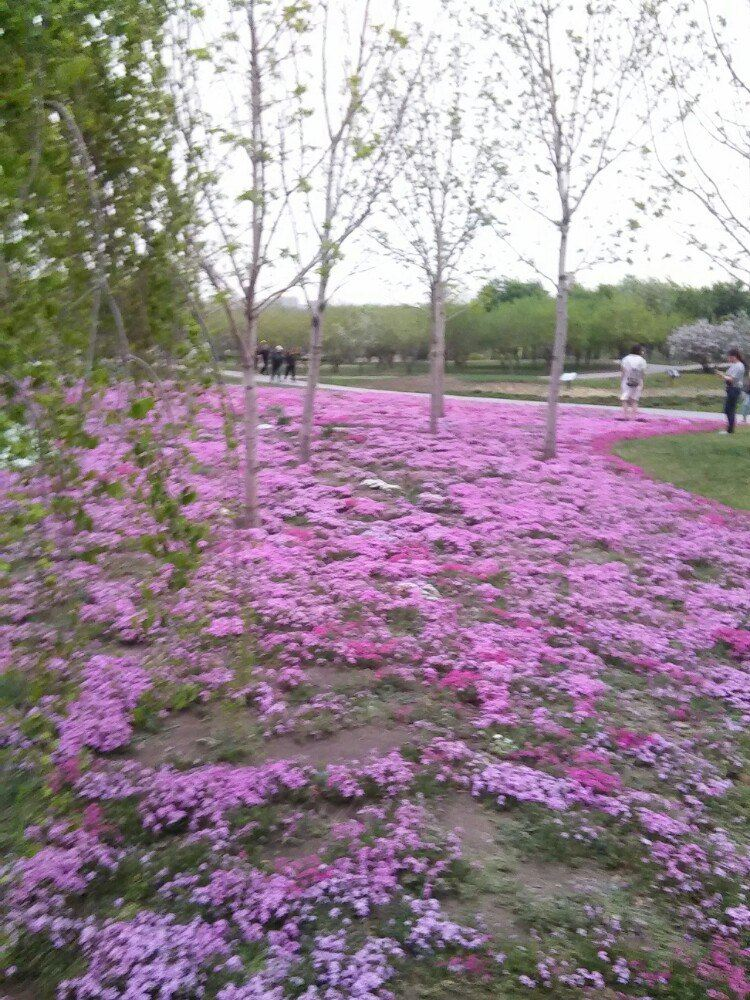
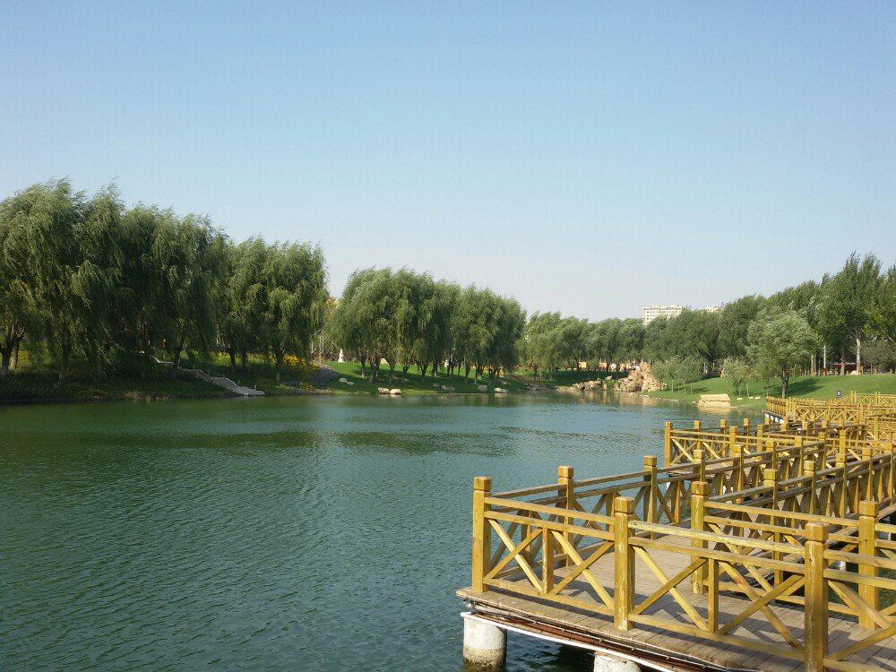
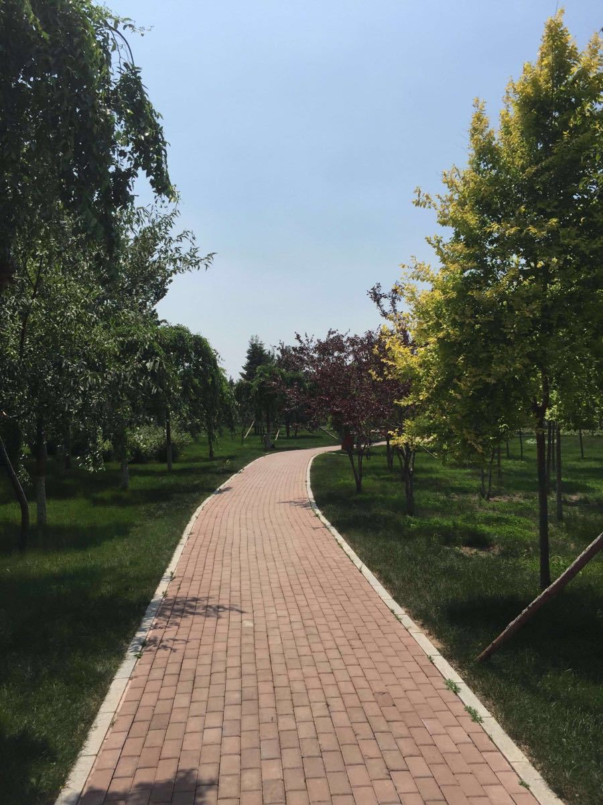
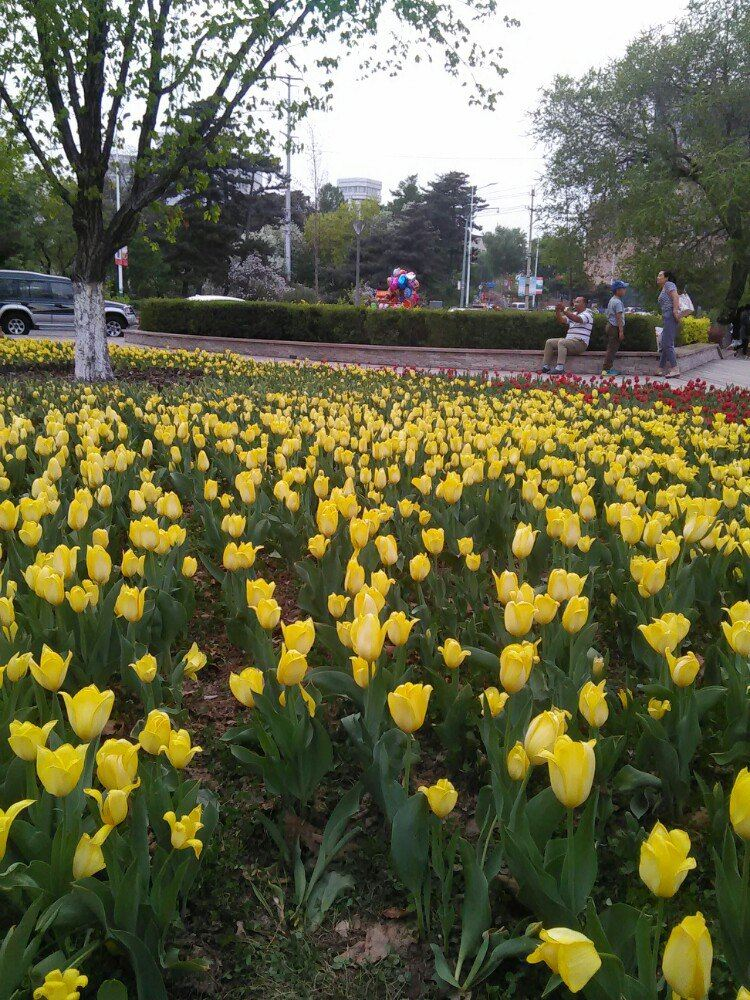

折叠 景区介绍
长春市民打卡较多的公园之一，园内的郁金香远近驰名，广场四周沿弧形线种植了60余个品种170余万株的郁金香，让人满眼都沉浸在这美丽的花海中。
{kind=link}
主入口设内外入口广场，外广场除中间布置规则式花坛外，两侧设置停车场，以满足停车需要，内广场的轴线上布置一组花坛，与外广场花坛相呼应。在正阳街入口轴线上，设宽敞的下沉式入口花卉广场，广场内设有以花卉为主题的雕塑以及喷泉、水池、花池、灯柱廊、坐椅、山石雕塑等园林小品。三号门轴线的末端是异国名园，除了世界各地的国花、名花外，还穿插了一些具有代表性的建筑、小品、雕塑，如欧式柱廊等。使游人在赏景的同时，增强了对各国的花卉文化知识的了解，起到一定的科普作用。
1999年被列为长春市园林重点改造工程，在绿园区 。规划面积67.3公顷，开发区占地约7公顷，公园规划占地60公顷。公园采用自然、野趣、树木花草相结合的方式，重点以观赏各类花卉为主题的生态型风景园。园内分分13个景区:包括岩石园、儿童游乐园、台地花卉园、花艺园等。该园拟种植各种植物110种，十多万株，每年拟种植牡丹、月季、郁金香、百合、风信子等花卉35万株，成为长春市第三大公园。园内还将种植大量的树木和花卉。
在野生花卉区与石头园之间的水面上还有一个游艺园，结合水面设置趣味桥、游艺桥、水中活动汀步以及攀缘墙等设施，是个不错的亲子活动地。
折叠 交通攻略
可乘坐263路到乐园路站下；
长春公园北门经过公交车364路、64路、147路、291路。
长春公园南门经过公交车270路、245路、253路、14路、283路、263路、139路、228路、271路、291路等。
长春公园西门经过公交车263路、291路、139路、289路、137路、234路、147路、283路、253路、270路等。
长春公园西门经过公交车315路。
折叠 公园历史
折叠 开放时间
全年全天开放 免费。
折叠 官方电话
0431-89856456，043187924181，043185664455。
折叠 景点相册
 


折叠 功能景区
主要分为：台地花卉园、花卉广场、野生花卉区、游艺园、花艺园、异国名花园、田园风光区、温室花卉展区、露地花卉区、儿童游乐园、岩石园、彩叶园、水生花卉区。
公园以主要植物景观分区为主，结合功能分区的形式，功能与艺术有机统一。公园沿环形主路两侧逆时针布置了13个景区，景区之间以密林、疏林、草地、水面和地形作为过渡和分割，以各级道路联系和贯穿，使各观赏区之间既相对独立，又通过自然生态林连成一个有机的整体。主入口设内外入口广场，外广场除中间布置规则式花坛外，两侧设置停车场，以满足停车需要，内广场的轴线上布置一组花坛，与外广场花坛相呼应，既烘托主入口轴线，花坛内的应时花卉也暗示出"花"的主题。入口内广场的南端是由一组微地形所围合的空间，微地形界定了主入口内广场的位置，在形成一道风景的同时，也形成一道障碍，起到分割空间，阻隔视线的作用，避免游人一览无余。
折叠 服务设施
公园内设置了必要的服务设施。如公园内沿主环路设有厕所和风雨廊，游艺园附近设一处餐饮娱乐厅，还设有小卖部及多处园椅和垃圾箱，园内结合造景设置了几处花架和风雨亭。这些服务设施设计都很精致，既是公园的小景观还能极大地方便游人。